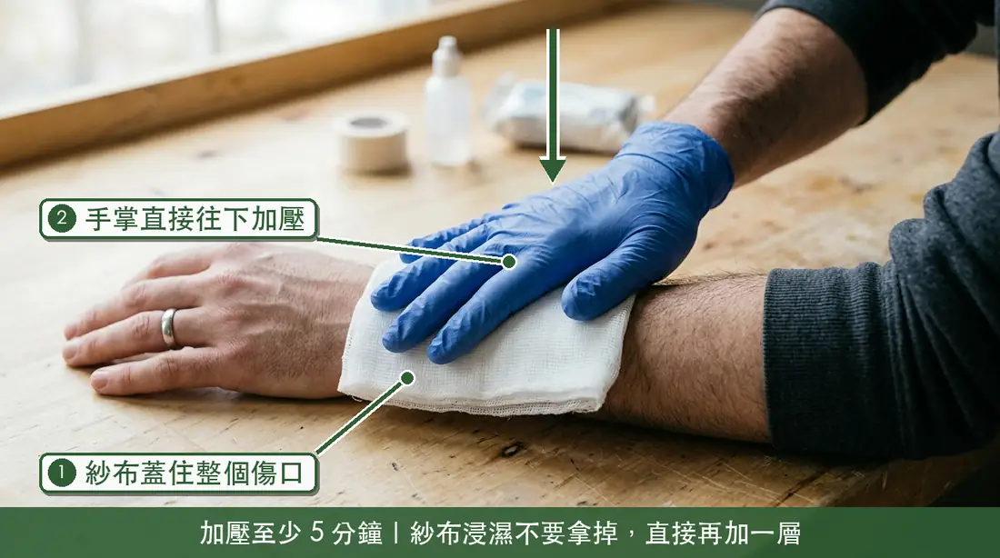
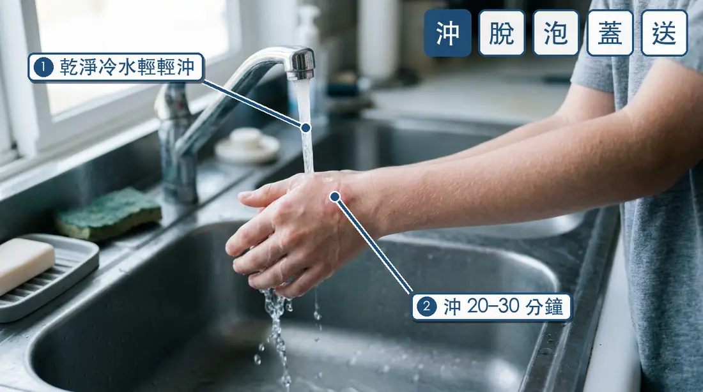
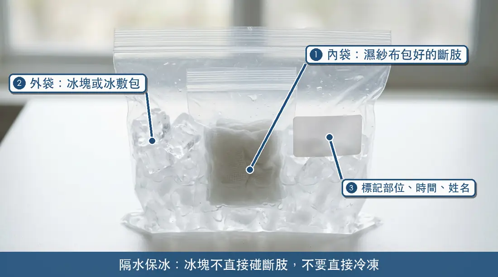
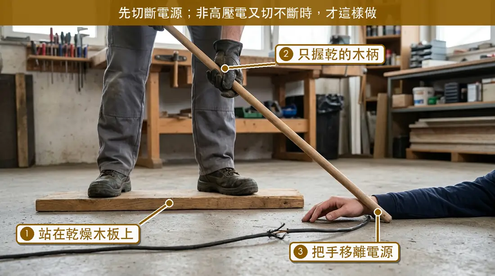
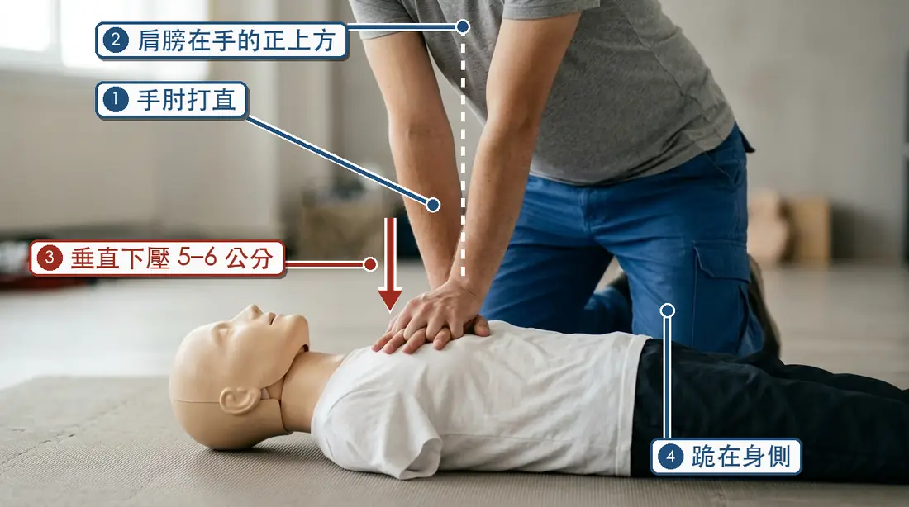
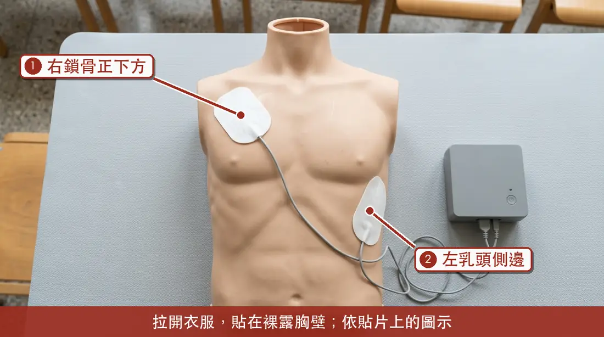

四
第四章
工場常見傷害的第一時間處置
每一種傷害都分成三欄：做什麼、不要做什麼、何時叫 119。內容取自衛生福利部、內政部消防署《救護技術員教科書》與臺北市政府消防局的公開資料，每一條都附出處。
先讀共通原則
任何傷害，先做這兩件事
- 確認現場安全：確認環境不會危及施救者和患者的安全，再靠近。在工場，這代表先讓機器停下、電源切斷、熱源移開。衛福部 民眾版CPR摘要表2021
- 大聲呼救、分工：請旁人打 119、去拿 AED、通知老師。用手機打 119 時開擴音，聽從 119 執勤人員指示。衛福部 民眾版CPR摘要表2021
本章是觀念介紹，不能取代實際受訓。止血帶、固定、CPR 與 AED 都需要在合格課程中親手練習。《緊急醫療救護法》規定，救護人員以外的人為免除他人生命之急迫危險，使用緊急救護設備或施予急救措施，適用民法、刑法緊急避難免責之規定。緊急醫療救護法 第14-2條
1割傷出血
美工刀、線鋸、鋸片
美工刀、線鋸、鋸片
割傷出血：直接加壓止血

- 紗布（或乾淨布料）蓋住整個傷口。
- 手掌直接往下加壓，至少 5 分鐘。
- 紗布浸濕時不要拿掉，直接在上面再加紗布、再加壓。
做什麼
- 用無菌紗布（或乾淨的布料）放在出血處，直接加壓止血。臺北市消防局 包紮止血法
- 加壓要持續：消防署教材指出最有效的止血方式是加壓止血，至少五分鐘，讓傷口凝血達到止血效果。消防署教科書 頁259
- 患肢如沒有骨折，可考慮抬高。臺北市消防局 包紮止血法
- 以彈性繃帶或三角巾包紮並持續加壓。臺北市消防局 包紮止血法
不要做
- 紗布被血浸透時，絕不要移除原有紗布，直接在上面加上更多紗布，再次加壓包紮。臺北市消防局 包紮止血法
- 傷口有插入的異物（例如斷掉的鋸片）時，應先固定、避免拔除。消防署教科書 頁259
- 止血帶是受過訓練才使用的技術：消防署教材將它用在危及生命的出血，並有綁的位置與記錄時間等規範。消防署教科書 頁140 沒受過訓練，先做直接加壓。
何時叫 119
- 危及生命的嚴重出血，或依上述方法仍無法有效止血，應立即打 119 求救。臺北市消防局 包紮止血法
2燙傷
熱熔膠槍、烙鐵、雷切件
熱熔膠槍、烙鐵、雷切件
燙傷：沖、脫、泡、蓋、送

- 用乾淨的冷水輕輕沖洗，不要強力沖擊。
- 沖洗或浸泡 20 至 30 分鐘，接著脫、泡、蓋、送。
做什麼
- 沖：用乾淨的冷水輕輕沖洗或浸泡 20 至 30 分鐘。臺北市消防局 燒燙傷處置
- 脫：在冷水中用剪刀剪開患處衣物。臺北市消防局 燒燙傷處置
- 泡：持續浸泡冷水 30 分鐘。臺北市消防局 燒燙傷處置
- 蓋：用乾淨或無菌紗布覆蓋患處，或以乾淨保鮮膜環繞包覆。臺北市消防局 燒燙傷處置
- 送：嚴重時打 119 求救。臺北市消防局 燒燙傷處置
- 化學品造成的灼傷：施救者要先做好自身防護（消防署教材要求處置人員穿戴足夠的防護再除汙）；沾有化學性粉末時，先用乾淨毛刷刷除污染物，再用大量清水沖洗。消防署教科書 頁265
不要做
- 衣物沾黏在傷口上時，勿強行剝除。臺北市消防局 燒燙傷處置消防署教科書 頁265
- 大面積燙傷不要泡到全身發冷：大面積灼燙傷會使皮膚無法保持體溫。消防署教科書 頁264 泡水時注意傷者保暖。
何時叫 119
- 消防署教材把下列情形列為重度灼燙傷：臉、眼、耳、頸、手、足、會陰部灼燙傷；合併吸入性灼燙傷；化學灼傷；高壓電灼傷。消防署教科書 頁263
- 估算面積可用「手掌原則」：傷者手掌（含五指）約占全身體表面積 1%。消防署教科書 頁264 成人二度灼燙傷超過 25% 即屬重度。消防署教科書 頁263
- 中度或嚴重灼傷應送往有處置灼傷能力的醫院。消防署教科書 頁265 拿不準嚴重程度，就打 119 讓執勤人員判斷。
3夾傷／壓傷
虎鉗、鑽床、重物
虎鉗、鑽床、重物
夾傷／壓傷：先停機，再止血與固定

- 斷肢用生理食鹽水潤濕的無菌紗布包好，放進乾淨塑膠袋。
- 另一個塑膠袋放冰塊或冰敷包，把第一個袋子放進去：隔水保冰，不要直接冷凍。
- 在最外層袋子標記斷肢部位、時間與傷者姓名，和傷者一起送醫。
做什麼
- 先確認現場安全：讓機具停止、切斷電源，再處理傷者。衛福部 民眾版CPR摘要表2021
- 有出血，照「割傷出血」直接加壓。臺北市消防局 包紮止血法
- 懷疑骨折的部位都當作骨折處理，以原來姿勢固定、儘量減少患處移動。消防署教科書 頁287
- 可視情況適度抬高患肢或冰敷，減緩疼痛及軟組織腫脹。消防署教科書 頁287 冰敷每次 15 至 20 分鐘後休息約 5 至 10 分鐘，冰敷袋外層用毛巾包覆，避免凍傷（臺北市消防局在扭傷處置的建議）。臺北市消防局 腳踝扭傷時
- 手指等部位斷離時：斷肢用生理食鹽水潤濕的無菌紗布包好，放入乾淨塑膠袋；再放進另一個裝有冰塊或冰敷包的袋子，隔水保冰，標記時間，和傷者一起送醫。消防署教科書 頁287消防署教科書 頁288
不要做
- 不要自己把變形的關節或骨頭扳回去：現場不需做脫臼或骨折復位。消防署教科書 頁287
- 斷肢不要直接冷凍；要用「隔水保冰」的方式，讓冰塊不直接碰到斷肢。消防署教科書 頁288
- 不要為了找斷肢而延誤傷者送醫。消防署教科書 頁288
何時叫 119
- 有斷肢、大量出血或明顯變形（本站建議）；斷肢要連同傷者一起送醫。消防署教科書 頁288
- 受傷肢體出現脈搏異常、冰冷、蒼白，或感覺、運動功能異常（可能是腔室症候群）。消防署教科書 頁288
4異物入眼
木屑、金屬屑、化學品
木屑、金屬屑、化學品
異物入眼：沖洗，插入物不要拔
做什麼
- 被強酸、強鹼等化學品噴到，必須立即以大量清水沖洗。消防署教科書 頁274
- 沖洗時撐開上下眼瞼，由內眼角往外眼角緩慢沖洗，持續沖洗並儘速送醫。消防署教科書 頁183
- 確認進入眼睛的是什麼東西（異物種類及性質），例如是木屑還是化學品。消防署教科書 頁183
不要做
- 有異物插入組織時，不可強行移除，應固定後儘速送醫。消防署教科書 頁274
- 眼睛受傷時不應隨便拔除隱形眼鏡；化學品灼傷時才在醫療指導醫師指示下拔除。消防署教科書 頁274
何時叫 119
- 化學品入眼：化學灼傷與眼部灼燙傷都屬重度灼燙傷。消防署教科書 頁263
- 有異物插入眼睛或眼周組織。消防署教科書 頁274
- 眼睛內的異物或污染物無法移除、情況加劇無法改善：持續沖洗，同時儘速送醫。消防署教科書 頁183
工場裡的預防方法，是操作機具時依工場規定配戴護目鏡。化學品入眼時不要自己決定沖多久就停：消防署教材的原則是持續沖洗並儘速送醫，之後聽從醫護人員指示。消防署教科書 頁183
5觸電
延長線、電動工具
延長線、電動工具
觸電：先斷電，別讓自己變成第二個傷者

- 先切斷電源。非高壓電、又無法切斷時，才站在木箱、橡皮墊等乾燥絕緣體上。
- 用乾的掃把、竹竿或木椅，把傷者的肢體拖離電源。
- 高壓電：離開至少 10 公尺，不要靠近，等專業人員斷電。
做什麼
- 先切斷電源。若是非高壓電、又無法切開電源，可站在木箱、塑膠管、橡皮墊或報紙等乾燥絕緣體上，用乾的掃把、竹竿或木椅將傷者的肢體拖離電源。消防署教科書 頁370
- 傷者沒有反應、沒有正常呼吸：立即 CPR，並儘早使用 AED——交流電常導致心室纖維顫動，因觸電而呼吸停止的傷者除了心肺復甦術，還要儘早去顫。消防署教科書 頁370 做法見下方昏倒／CPR＋AED。
- 注意是否從高處摔落、合併骨折，尤其是頸部。消防署教科書 頁370
不要做
- 電源還沒隔開前，不要直接用手碰傷者。消防署教科書 頁370
- 高壓電：電線要移開至少 10 公尺才能接近傷者；未斷電前絕不要進入區域，也不要嘗試用任何東西移除電線或移動傷者，請專業人員斷電。消防署教科書 頁370
何時叫 119
- 沒有反應、沒有呼吸：立刻叫，同時開始 CPR。衛福部 民眾版CPR摘要表2021
- 電燒傷常有「入口」與「出口」兩處傷口，外表看不出全部傷害。消防署教科書 頁370 恢復心跳的傷者仍可能再次心跳停止，需要持續監測心電圖。消防署教科書 頁371 觸電後即使看起來沒事，也應送醫評估。
6昏倒
CPR＋AED
CPR＋AED
昏倒：叫叫、按壓、電擊
以下依衛生福利部《民眾版心肺復甦術參考指引摘要表（2021 年版）》的成人流程整理。衛福部 民眾版CPR摘要表2021 心跳停止後，要儘快在黃金 4 分鐘內透過胸外按壓維持血液循環，避免腦部因缺氧而造成永久傷害。臺北市消防局 CPR+AED
- 確認現場安全：確認環境不會危及施救者和患者。衛福部 民眾版CPR摘要表2021
- 叫：確認意識：拍肩呼喚「你怎麼了！」，確認有無反應。臺北市消防局 CPR+AED
- 叫：求救：大聲呼救、打 119、設法取得 AED；可以用手機打 119，儘量不要離開病人，開啟擴音，聽從 119 執勤人員指示。衛福部 民眾版CPR摘要表2021
- 確認呼吸：沒有呼吸或幾乎沒有呼吸，就開始胸外按壓；若無法確定，也立即開始胸外按壓。呼吸正常則持續監測，等候救護人員到場。衛福部 民眾版CPR摘要表2021
- C 胸部按壓：掌根放在兩乳頭連線中央（胸骨下半段）。衛福部 民眾版CPR摘要表2021
- 用力壓：深度 5 至 6 公分。衛福部 民眾版CPR摘要表2021
- 快快壓：每分鐘 100 至 120 下（約一秒鐘 2 下）。衛福部 民眾版CPR摘要表2021
- 胸回彈：每次按壓後讓胸部完全回彈。衛福部 民眾版CPR摘要表2021
- 莫中斷：儘量避免中斷，中斷時間不超過 10 秒。衛福部 民眾版CPR摘要表2021
- D 電擊：AED 到達後，打開機器、黏上貼片，聽從 AED 語音指示操作，之後立即恢復 CPR。衛福部 民眾版CPR摘要表2021消防署教科書 頁123
- AED 語音說不要碰觸病人（分析心律）時，暫停按壓；要電擊時口喊「離開」，確定沒有人接觸病人才按電擊鈕。消防署教科書 頁123
- 持續：持續高品質 CPR，直到救護人員抵達，或患者開始有動作或有正常呼吸。衛福部 民眾版CPR摘要表2021

- 手肘打直。
- 肩膀前傾，位於雙手正上方，用上半身重量往下壓。
- 垂直下壓 5 至 6 公分，每分鐘 100 至 120 下，每次讓胸部完全回彈。
- 兩膝打開與肩同寬，跪在患者身側、儘量靠近。
- 手勢以圖 4-7 為準：本圖只示範身體姿勢；圖中下方手的手指貼著胸部，是 AI 繪圖畫不出來的細節。正確做法是下方手手指翹起、只有掌根接觸胸部，請看圖 4-7 B。

- 拉開衣服，貼在裸露的胸壁上，依貼片上的圖示貼。
- 一片在右鎖骨正下方。
- 一片在左側乳頭側邊。
- 貼好、開機後聽從 AED 語音指示。
不要做
- 不要壓太淺，也不要超過 6 公分：衛福部流程圖註明「大部份的人壓不夠深、但壓太深會有傷害」。衛福部 民眾版CPR摘要表2021
- 不要因為不會人工呼吸就不救：施救者若不操作人工呼吸，就持續做胸部按壓。衛福部 民眾版CPR摘要表2021
- AED 貼上後，不要自行判斷，照機器語音指示做。衛福部 民眾版CPR摘要表2021
- AED 分析心律與電擊時，任何人都不要碰觸病人。消防署教科書 頁123
何時叫 119
- 一確認沒有反應就叫，不要等。成人的流程是先打 119 求援。衛福部 民眾版CPR摘要表2021
吹氣怎麼做？摘要表的比率是按壓與吹氣 30:2，每口氣 1 秒鐘、可見胸部起伏。衛福部 民眾版CPR摘要表2021 人工呼吸與 AED 操作都屬於需要實作練習的技能，請在合格課程中學習。
AED 在哪裡？《緊急醫療救護法》規定中央衛生主管機關公告的公共場所應設置 AED。緊急醫療救護法 第14-1條 可在衛福部 AED 急救資訊網查詢。衛福部 AED急救資訊網 先認識學校的 AED 放在哪裡。